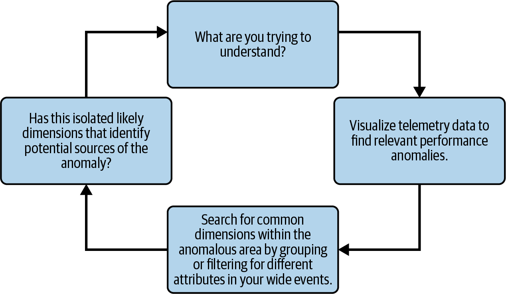
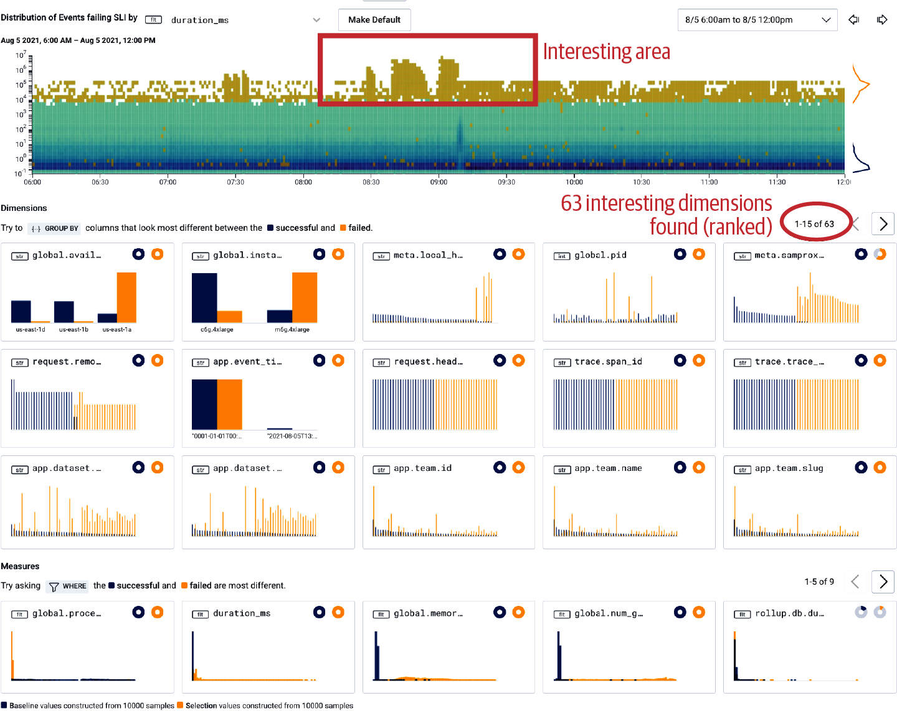
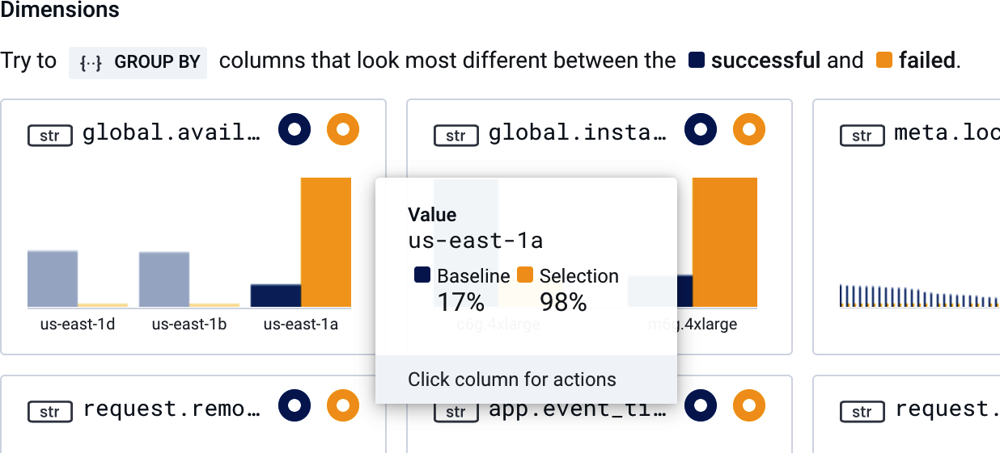

<title>第 8 章　開始進行可觀測性分析 — 《可觀測性工程》第二版</title>
<link rel="stylesheet" href="style.css">

<nav class="chapnav">
    <a href="ch07.html">← 上一章</a>
    <a href="index.html">目錄</a>
    <a href="ch09.html">下一章 →</a>
  </nav>
<main>
  <header class="masthead">
    <span class="eyebrow">Observability Engineering · Second Edition</span>
    
    <h1 class="title serif">第 8 章<br>開始進行可觀測性分析</h1>
    <div class="rule"></div>
  </header>

  <p>在本書的第二部分中，你已學到如何檢測程式碼以發出遙測資料的基礎知識。但這只是等式的一半。收集正確的資料是基本要求，但可觀測性真正的衡量標準，在於你能從這些資料中對系統行為學到多少。</p>
<p>本章將探討收集你先前所學到的遙測資料，如何徹底改變你理解程式碼行為的方式。在高可觀測性系統中運作時，你所使用的分析技術，與你在傳統低可觀測性系統中習慣使用的技術截然不同。</p>
<p>我們將先檢視低可觀測性系統中所使用的分析技術。這些方法高度仰賴調查人員對系統既有的熟悉程度與經驗，才能成功找到答案。相對地，在高可觀測性系統中，調查人員一開始便採用一套結構化流程——核心分析循環——引導他們找到問題的正確源頭。這樣的差異不僅讓找出問題的過程更加公平，也能大幅加快修復速度。</p>
<p>核心分析循環可以手動完成，但自動化執行效果最佳。在探討如何自動化分析時，我們將思考人類與電腦在建立有效除錯工作流程中各自扮演的角色。我們也會提供在使用 AI 助理來自動化遙測資料分析時的指引。透過展示這些分析技術，你將了解為什麼具備高度可觀測性的系統，能讓你識別出低可觀測性工具無法偵測到的問題。</p>
<h2 class="section serif">從已知條件除錯</h2>
<p>在現代可觀測性工具出現之前，系統與應用程式除錯意味著你必須從自己已經知道的事情出發。這個基於閾值的警報告訴我應該調查什麼？我看到的這個儀表板上「正常」的樣子是什麼，跟目前顯示的狀況相比又如何？</p>
<p>回想一下你剛加入一個新團隊、對正在調查的系統還一無所知的時候。你很可能得先累積相當程度的系統知識，理解「正常」代表什麼，才有辦法投入事故並主導調查。</p>
<p>當你是新人時，看資深工程團隊成員處理故障排除的工作流程，簡直像變魔術一樣。不知怎地，他們就是知道該問哪些問題才對，也本能地知道該往哪裡找。但那種直覺並不是魔法，比較像是累積出來的疤痕組織。透過反覆經歷過去的系統故障，他們已經把各種故障模式、奇怪的邊緣案例，以及通常能指向正確方向的儀表板或圖表都記在腦中了。</p>
<p>工程團隊的管理者通常對這種現象相當了解，因為他們往往就是那個得想辦法把這種「魔法」裝進瓶子裡的人。他們會敦促資深工程師撰寫詳細的操作手冊，試圖找出並解決他們在實際環境中可能遇到的每一個「根本原因」。於是就會出現一陣忙亂，設法把團隊累積下來、數量不斷增加的儀表板記錄下來，說明每一個代表什麼意思。</p>
<p>有些文件是不可或缺的：擁有權、升級路徑、依賴關係，以及幾個可靠的切入點查詢。但花在撰寫這些操作手冊、記錄儀表板上的時間，大多都是白費工夫，因為現代系統很少會以完全相同的方式故障兩次。而當它們真的重複發生時，設定自動修復來矯正該故障、直到有人能妥善調查為止，已經是愈來愈常見的做法。</p>
<p>任何寫過或用過操作手冊的人都能告訴你，這些手冊有多麼不堪一用。也許它們是為了暫時處理技術債而存在：有個反覆出現的問題，操作手冊告訴其他工程師該如何緩解問題，直到之後的衝刺才能真正解決。</p>
<p>更常見的情況——尤其是在分散式系統中——是一長串幾乎從未發生過的問題，卻正是造成正式環境連鎖故障的元凶。或者，五個看似不可能同時成立的條件會恰好一致，造成大規模的服務故障，而這種情況可能每隔幾年才發生一次。</p>
<h3 class="subsection">關於操作手冊的一些思考</h3>
<p>「建立操作手冊所花的時間大多是浪費的」這個說法乍聽之下或許有點嚴苛。要說清楚的是，操作手冊中的部分文件內容是不可或缺的。舉例來說，對每個服務，都應該記錄基本資訊，包括哪個團隊擁有並維護該服務、如何聯繫值班工程師、升級處理的聯絡點、此服務所依賴的其他服務（以及反過來依賴此服務的其他服務），以及可作為理解其效能起點的優質查詢或儀表板連結。</p>
<p>然而，維護一份試圖涵蓋所有可能系統錯誤與解決方式的動態文件，既是徒勞無功，也相當危險。這類文件很快就會過時，而錯誤的文件或許比沒有文件更危險。在快速變動的系統中，檢測本身往往就是最好的文件，因為它同時結合了意圖（工程師命名並決定收集哪些維度？）以及正式環境中即時、最新的即時狀態資訊。</p>
<p>然而工程師通常會接受這種運作方式，認為「故障排除本來就是這樣做的」。畢竟，除錯的方式數十年來一直都是如此。但這真的是我們所能做到的最好方式嗎？</p>
<p>難道我們必須先徹底了解系統的所有部分——無論是透過直接接觸與經驗、文件，還是操作手冊？然後我們看著儀表板，接著⋯⋯憑直覺推測出答案？又或者我們應該先猜測根本原因，然後開始在儀表板中尋找證據來確認我們的猜測？</p>
<p>即使在為應用程式加入檢測以發出可觀測性資料之後，你可能仍然是在已知條件下進行除錯。舉例來說，你可以把那個包含大量屬性的事件的資料流輸出到tail ‑f，再用 grep 搜尋已知的字串，就像現今用非結構化日誌進行故障排除的做法一樣。或者，你也可以把查詢結果串流到一連串無窮無盡的儀表板上，就像現今用指標進行故障排除的做法一樣。你在某個儀表板上看到一個尖峰，接著開始翻閱數十個其他儀表板，用肉眼比對相似的形狀。</p>
<p>蒐集更好的遙測資料並非讓你能夠除錯未知狀況的關鍵，你如何分析這些資料才是真正決定成敗的關鍵所在。</p>
<p>在 Honeycomb，我們花了不少時間才想通這一點，即使在打造出自己的可觀測性工具之後也是如此。身為工程師，我們的天生傾向是直接跳到我們對系統已知的部分。在 Honeycomb 早期，在我們學會不要從已知條件出發除錯之前，更好的可觀測性幫助我們做到</p>
<p>只是跳到正確的高基數問題，去詢問我們事件中所擷取的數百個維度。</p>
<p>如果我們剛推出一項新的前端功能，並擔心其效能問題，我們就會問：「這對我們的 CSS 和 JavaScript 資產大小造成多少改變？」既然剛寫完那段檢測程式碼，我們就會知道該如何算出 css_asset_size 和 js_asset_size 的最大值，並依 build_id 拆解效能表現。如果我們擔心某位剛開始使用我們服務的新用戶，我們就會問：「他們的查詢速度快嗎？」接著我們就會知道要依 team_id 篩選並計算 P95 回應時間。</p>
<p>但那仍然是從已知條件出發的除錯。當你不知道哪裡出了問題、也不知道該從何處著手時，會發生什麼事？如果你完全不知道可能發生了什麼事呢？關鍵的轉變不只是在流程中更進一步而已，而是當你還不知道整個來龍去脈時，該如何進行調查。</p>
<p>當你還不知道來龍去脈時，你就必須從第一原理進行除錯。</p>
<h2 class="section serif">從第一原理進行除錯</h2>
<p>從第一原理進行除錯，是指在能以證據驗證之前，將自己的理解視為暫定的一種做法。第一原理是關於系統的一項基本假設，並非從另一項假設推導而來。在哲學上，第一原理被定義為認識一件事物的最初依據。從第一原理進行除錯，意味著運用一套方法論，以科學的方式來理解一個系統。</p>
<p>真正的科學要求你不能假設任何事情。你必須從質疑什麼已經被證實、什麼是你絕對確定為真的事物開始。接著，基於這些原則：你形成假設，用你的遙測資料進行驗證，然後不斷重複，直到解釋能夠符合觀察到的行為為止。</p>
<p>現代可觀測性所帶來最實用的能力之一，就是讓調查過程變得既有條理又可以教導他人。憑直覺直接跳到正確答案固然美妙，但隨著複雜度飆升，這種做法會變得越來越不切實際（而且絕對無法擴展）。</p>
<p>你不需要讓每個人都成為系統高手才能讓團隊維持速度，而是可以仰賴一個可重複的循環，引導調查者找到真正能解釋問題的條件。在現代系統中，這項能力變得更加重要，因為問題的根源往往是多重成因的：當你在思考到底哪裡出錯，而答案是「13 種不同的原因」時，該怎麼辦？</p>
<p>這種有條理且可教導的循環，正是高可觀測性系統中分析工作的基礎。</p>
<h2 class="section serif">使用核心分析循環</h2>
<p>核心分析循環是一種以假設為驅動的除錯方式：提出假設、驗證假設、修正假設。先形成假設，探索資料以確認或推翻假設，並根據所學不斷迭代。</p>
<p>這種方法不僅比仰賴直覺與模式辨識更具科學性，也讓除錯這件事變得更加民主化。相較於基於直覺的故障排除，使用核心分析循環更為嚴謹，因為它傾向於獎勵好奇心與細心觀察，而非單純仰賴對系統的熟悉程度。</p>
<p>除錯的成功不再大幅偏向經驗最豐富的工程師。相反地，只要對觀察正式環境中的程式碼抱持最強烈的好奇心或最勤勉的態度，任何人都能成為最出色的調查者。這代表即使對系統所知甚少的人，也應該能夠加入並對任何問題進行除錯。</p>
<p class="fn">讓我們來看看這是如何實現的。</p>
<p>首先，從第一原理進行除錯通常始於某個訊號顯示系統狀況異常；可能是客戶回報、性能出現變化，或是一則警報。（關於有效的警報，請參閱第 11 章。）</p>
<p>無論通知來源為何，此時你已知道有些地方出了問題（例如變慢了），但還不清楚確切原因。開始這個流程：查詢系統遙測資料以形成初步假設，用資料驗證或推翻該假設，並不斷迭代，直到有系統地得出答案為止。圖 8‑1 顯示核心分析循環的四個基本步驟。</p>
<figure class="plate">
<figcaption>圖 8‑1。核心分析循環。</figcaption></figure>
<p>核心分析循環的運作方式如下：</p>
<p>1. 從促使你展開調查的整體概況開始：客戶、異常，或警報告訴了你什麼？</p>
<p>2. 驗證目前所知是否屬實：系統中是否有某處出現顯著的性能變化？資料視覺化有助於將行為變化識別為圖表中曲線某處的變化。</p>
<p>3. 在該曲線變化的範圍內，尋找存在於此處、但在基準性能區域（曲線之外）不存在的共同維度。達成此目的的方法可能包括：</p>
<p>a. 檢視顯示變化區域的樣本資料列：欄位中是否有任何</p>
<p>異常值，能提供你線索？</p>
<p>b. 依據各種維度切分這些資料列，尋找模式：是否有任何</p>
<p>這些視圖是否凸顯了跨一或多個維度的明顯差異行為？可以試著針對常用欄位（例如 status_code）進行實驗性群組。</p>
<p>c. 篩選這些資料列中的特定維度或值，以更好地</p>
<p>凸顯潛在的異常值。</p>
<p>4. 你現在是否已充分了解問題可能出在哪裡？如果是，就完成了！如果還不夠，請將視圖篩選得更精確，作為下一步分析效能的起點，然後回到步驟 3。</p>
<p>這種循環讓你不需要對每個子系統都預先建立心智模型，就能持續往前推進。你可以把它當作一種暴力法（brute‑force method），逐一檢視所有可用的維度，直到找出哪些維度能解釋或與圖表中的異常值相關（但請記住，不要把相關性與因果關係混淆）。無論你對該系統的熟悉程度如何，這個方法都同樣適用。</p>
<p>當然，這種暴力法可能會耗費相當可觀的時間，使得單靠人工操作者來執行這種做法變得不切實際。一個可觀測性工具應該盡可能為你自動化這種暴力分析。</p>
<h2 class="section serif">自動化核心分析循環中的暴力搜尋部分</h2>
<p>核心分析循環是一種客觀方法，用來在一片正常系統雜訊中找出真正重要的訊號。這個循環中的暴力搜尋工作，就是要篩過所有雜訊資料，找出有所不同的訊號。而電腦最擅長做這件事。</p>
<p>自動化工具不需要手動在行與欄之間搜尋以逼出模式，而是可以取得所有維度的值——不論是在隔離區域（異常）之內，還是在區域之外（系統基準線）——加以比對差異，並依據哪些欄位和值與異常行為關聯最強來排序。將這個循環自動化，能極快地找出可能的因果因素，讓調查者知道下一步該往哪裡看。</p>
<p>舉例來說，你可能圈選出請求延遲的一個尖峰，透過自動化核心分析循環，取得一份依出現頻率排序的維度清單。你可能會看到以下結果：</p>
<p>• 值為 batch 的 request.endpoint 出現在隔離區域中 100% 的請求裡，• 但在基準線區域中只佔 20%。</p>
<p>• 值為 /1/markers/ 的 handler_route 出現在隔離區域中 100% 的請求裡，•但在基準線區域中只佔 10%。</p>
<p>• request.header.user_agent 在隔離區域中有 97% 的請求填有值，• 而在基準線區域中則是 100%。</p>
<p>一眼望去，這就凸顯出你關心的那些特定請求究竟有何不同——不論那是一個偏差還是數十個偏差。作為一個具體範例，我們接下來會看看 Honeycomb 的BubbleUp 功能，展示自動化核心分析循環的實際運作。</p>
<p>使用 Honeycomb 時，你會先透過視覺化熱圖來圈選出你關心的特定效能區域。Honeycomb 透過 BubbleUp 將核心分析循環自動化：你只要用滑鼠點選圖中令你在意的尖峰或異常形狀，並框選出來即可。接著，BubbleUp 會計算框內（你關心並想解釋的異常）與框外（基準線）所有維度的值，將兩者相比，並依差異百分比排序結果視圖，如圖 8‑2 所示。</p>
<figure class="plate">
<figcaption>圖 8‑2　Honeycomb 於一次真實事件期間所顯示的事件效能熱圖。BubbleUp 找出 63 個有趣維度的結果，並依最大百分比差異對結果排序。</figcaption></figure>
<p>在這個範例中，我們檢視的是一個具有高維度檢測的應用程式，BubbleUp 可以對其進行計算與比較。計算結果以直方圖呈現，使用兩種主要顏色：藍色代表基線維度，橘色代表所選異常區域中的維度（在印刷影像中藍色呈現為深灰色，橘色呈現為淺灰色）。在左上角（排序結果中的最上方），我們看到一個名為 global.availability_zone 的欄位，其值為 us‑east‑1a，僅出現在 17% 的基線事件中，卻出現在所選區域中 98% 的異常事件裡（圖 8‑3）。</p>
<figure class="plate">
<figcaption>圖 8‑3。在圖 8‑2 結果的這張放大圖中，橙色長條（列印圖中為淺灰色）顯示 global.availability_zone 在所選區域中有 98% 的事件為 us‑east‑1a，而藍色長條（深灰色）則顯示在基準事件中只有 17% 的比例是如此。</figcaption></figure>
<p>這項資訊帶來了極大的幫助。我們現在已經知道了看似觸發緩慢性能的條件:某個可用區（AZ）中的特定實例類型，比我們關心的其他基礎設施更容易出現非常緩慢的性能。在這種情況下，這個明顯的差異指向的正是雲端供應商整個可用區的底層網路問題。</p>
<p>並非所有問題都像這個底層基礎設施問題一樣顯而易見。你經常需要查看其他浮現出來的線索，才能對與程式碼相關的問題進行分診。核心分析循環仍然相同，你可能需要跨維度切分資料，直到浮現出一個明確的訊號，就像前面的範例一樣。</p>
<p>在這個案例中，這個範例取自一次真實的事故。我們聯繫了雲端服務供應商，同時也在自家用戶回報同一區域出現類似問題時，獨立驗證了這起未被通報的可用性問題。倘若這是一個與程式碼相關的問題，我們可能會決定聯繫那些用戶，或是設法還原他們透過使用者介面（UI）看到這些錯誤所經過的路徑，藉此修正介面或底層系統。</p>
<p>這正是為何包含大量屬性、結構化的事件如此重要：你需要足夠的情境脈絡才能切分、拆解、比較與解釋。指標通常無法提供必要的維度。日誌有時可以被關聯成類似事件的結構——前提是你已正確附加所有的請求 ID、追蹤 ID 及其他標頭，並且做了大量的後製處理才能將它們重新組合成事件。但這仍然需要能在讀取時聚合這些日誌，並針對聚合結果執行複雜的自訂查詢。</p>
<p>換句話說，即使是核心分析循環的手動版本，若沒有包含大量屬性的結構化事件這個基本構件，也是無法達成的。而如果在你的可觀測性工具中一開始就無法手動完成，那麼它就無法被自動化。</p>
<p>核心分析循環是一個值得手動練習的有用練習，能更好地理解那些有趣的因果維度究竟是如何被呈現出來的。然而，自動化更為實用。自動化並不會取代調查，而是移除重複、耗時的比較工作，讓人類能夠專注於解讀與決策。</p>
<p>由於從第一原理進行除錯並不需要事先熟悉系統，核心分析循環的自動化可以簡單且有條理地完成，不需要事先為被除錯的應用程式植入「智慧」。</p>
<p>這就引出一個問題：這種數字運算應該套用多少智慧？人工智慧與機器學習是否是我們所有除錯問題的必然解方？</p>
<h2 class="section serif">以生成式人工智慧自動化分析</h2>
<p>在本書第一版中，我們曾寫到 AIOps（用於 IT 運作的人工智慧）這個名詞背後具有誤導性的承諾——這是 Gartner 在 2017 年提出的術語，用來描述與可觀測性在功能上的交集，運用機器學習來降低警報雜訊並改善異常檢測。當時我們寫道，唯有在存在可清楚辨識的模式，且能夠訓練模型以不斷變化的基準線來進行預測時，人工智慧才能真正發揮作用。而在當時，這樣的訓練模式在人工智慧領域中尚未出現。</p>
<p>我們把使用人工智慧的挑戰歸結為人類與機器之間的一種張力，建議讓電腦去做它們最擅長的事（在大量資料集中反覆運算以找出有趣的模式），並將這與人類最擅長的事（為這些有趣的模式添加認知脈絡，從雜訊中篩選出真正的訊號）結合起來。但現在，在生成式人工智慧（generative AI）的時代，電腦或許可以說是兩者都能做到。這對於現今在自動化分析可觀測性資料方面的思考，會帶來什麼影響呢？</p>
<p>生成式 AI 領域的發展步調快得驚人，這對本書帶來一項挑戰：我們能否寫出在你讀到這段文字時尚未過時的指引？考量到這一點，我們將焦點放在流程上，討論各種分析模式，以及它們如何與最終對決策和系統可靠性負責的人類產生交集。我們也會探討你該如何做好準備，將代理式 AI（agentic AI）整合進你的可觀測性工程實務中。</p>
<p>可觀測性的目的最終在於理解，並透過這種理解做出改善。生成式 AI 系統在調查循環中的意義建構環節完全仰賴人類——也就是前面提到的「你想理解的是什麼」中的「什麼」。因此，在思考代理式工具時，應該先釐清 AI 相對於人類所處的位置：這些工具究竟是副駕駛、指揮官,還是照護者？讓我們逐一探討這三種角色,以便你能辨識出它們。</p>
<h3 class="subsection">代理式 AI 角色設定</h3>
<p>「協作副駕」（copilot）與人類並肩作業，共同分析問題、調查性能回歸，或產生更多假設。協作副駕可能具備存取工具的能力，可獨立執行任務，也可能僅使用人類操作者所提供的資訊。歸根究柢，操作者是把此代理程式當作自身知識與專業能力的延伸來使用。而人類則必須評估代理程式的輸出，並引導它朝正確的方向去尋找答案與假設。這種模式的一個實際範例，就是使用ChatGPT 或 Claude Desktop 來分析堆疊追蹤（stack trace）、分散式追蹤資料的圖片，以及程式碼，藉此產生新的查詢或推敲函式的執行過程。</p>
<p>「指揮官」是邁向自主性的一個階段。在這種模式下，人類為代理人生成任務與目標，代理人接著在較少監督的情況下去實作或執行這些任務。指揮官擁有工具的存取權，這些工具讓代理人能夠撰寫並執行程式碼、存取遠端資料來源、瀏覽網路，或幾乎任何其他事情。目標可以定義得較為模糊。例如，「我的服務為什麼變慢了？」就是一個有效的問題。代理人會運用自身能力來解讀問題並找出答案。此外，它也能提出解決方案。這類代理人的一個例子是Cursor 或 Claude Code。人類可以選擇對這些代理人提供直接的逐步監督，也可以讓它們在背景中運作、持續處理任務，但無論哪種方式，這些代理人都在實際執行的工作與操作者之間提供了一定程度的區隔。相對地，這種區隔也使理解上的傳遞變得較弱，操作者對細節的掌握程度也隨之降低。</p>
<p>最後，「看護者」不僅具備自主性，還脫離了人類的直接監督。看護者代理人並非回應查詢或任務，而是帶著嚴格界定目標的被動觀察者。舉例來說，這類代理人可能會被賦予操作手冊或其他知識產物的存取權，並被安置在警報或部署流程的路徑上，配合一套規則運作：「部署完成後，用新的 feature flag檢查每個端點，查閱該旗標對應的工單以了解其存在原因，並確認目標是否已達成」，或是「當警報觸發時，蒐集所有相關資訊，提出三個可能發生狀況的假設，然後將它們發布到對應的事件頻道中」。</p>
<p>這些代理並非科幻情節：最先進的生成式 AI 模型與機器學習技術已讓它們觸手可及，這個領域正有不少有趣的研究成果。1 至關重要的是，看護型代理在建立或設定的過程中，需要大量從人類轉移至代理的知識傳承。代理必須被教會你系統中的種種特殊之處。</p>
<h2 class="section serif">在實務上運用代理式 AI 進行可觀測性分析</h2>
<p>思考這些代理的類型，我們就會碰上一個根本性的問題：情境脈絡究竟存在何處？是存在人類的心中，還是已經妥善地從人類轉移到代理身上？這些情況相當微妙，也會隨技術演進而改變。不過，讓我們先來看看在這些情況下，無論如何都成立的道理。</p>
<p>遙測資料的品質至關重要。人類或許能夠應付不同服務間屬性模式或欄位命名上的細微差異，但同樣這些細微變化，卻可能對 AI 分析的品質造成大得多的影響。主要行動者是否擁有足夠的情境脈絡來因應？在這些角色中值得留意的一點是，隨著 AI 自主性的提高，潛在錯誤的量也隨之增加——而且錯誤的程度會複合累積。</p>
<p>如果你使用的是副駕駛，一旦 AI 偏離軌道，你大可直接開啟新的會話。指揮官型代理可能會採取錯誤的行動，但你仍有機會即時進行監督。而獨自彙整事故資料的看護型代理，則有更多機會讓微小的解讀錯誤層層累積，進而擴大成更大的服務影響、時間浪費、對工具信任的喪失，甚至是資料遺失或損毀。</p>
<p>人類仍然舉足輕重——非常重要。無論模式、目標或工具為何，結果的責任依然歸屬於人類。你將負責代理所擁有的情境脈絡、它所追求的目標，以及其行為所造成的結果。</p>
<p>在嘗試以代理式 AI 進行可觀測性分析時，切記要擁抱失敗與不確定性。針對AI 代理常見的批評是它們會出錯。我們想為這個批評再添一點細節：問題往往不在於代理出錯本身，而在於代理被優化成表現得很有自信。</p>
<p>對這個領域略知一二的旁觀者，可能會以為「幻覺」是 AI 代理的主要問題。這種說法有其細微之處，而最先進的模型已經更妥善地緩解了幻覺問題。更有可能發生的情況是，代理做出了合理的</p>
<p class="fn">1 這個領域近期一些有趣的論文包括〈Recommending Root‑Cause and Mitigation Steps for Cloud Incidents using Large Language Models〉、〈Building AI Agents for Autonomous Clouds〉，以及〈X‑lifecycle Learning for Cloud Incident Management using LLMs〉。</p>
<p>決策或推論，而這樣的回應在人類觀察者眼中，依據他們的隱性知識來看，會顯得不合理。</p>
<p>這意味著代理要得出與人類相同的結論，可能得花更多次嘗試；因為代理每次都必須從頭重建系統狀態。它可能得先跑過幾個「不正確」的查詢，才能建構出正確的查詢。此時，身為操作者的你，角色就是確保代理擁有最好的資訊，讓它能自行導向正確的方向。</p>
<p>讓我們用實例來說明這個概念。有個 AI 代理觀察到一個名為 slow_request 的遙測欄位，當請求超過 300 毫秒時該欄位永遠為 true，否則為 false。這個代理並沒有其他關於此欄位含義的中繼資料，也無法判斷出任何其他明顯的原因。</p>
<p>代理的結論是：請求變慢是因為 slow_request 這個屬性；它推測這個屬性也許代表某種負載測試，或可能是被當作 feature flag 使用。但實際上，這個屬性只是單純表示該請求耗時超過 300 毫秒。在加入一段說明這個欄位為何存在、以及在什麼情況下會是 true 之後，代理便會在分析時將它排除在外。</p>
<p>代理式 AI 的自主程度越高，提供關於環境的更好上下文就越關鍵。AI 代理有其專屬的需求，但這些需求其實非常接近人類的需求。AI 需要關於其所觀測系統的精確、簡潔且即時的文件，才能得出更好的結論。生成式 AI 代理需要高品質的遙測資料——不僅僅是標準化的屬性與名稱，還需要語意上的一致性、人類可讀的描述，以及能夠快速搜尋並列舉遙測空間的能力。它們需要有自由去快速調查並反覆驗證假設，但同時也需要護欄與檢查機制，以防止潛在的破壞性行為。</p>
<p>簡言之，許多能藉由代理式 AI 改善系統分析的做法，同樣也能提升人類執行核心分析循環的能力。（若想深入探討此主題，請參閱第 10 章。）</p>
<h2 class="section serif">結論</h2>
<p>要達到高度的可觀測性，光靠收集正確的遙測資料還不夠，還需要能在任何不確定程度下運作的分析實務。核心分析循環提供了一套可重複、依循第一原理的調查方法，無論系統複雜度為何都能有效運作。它在有效的故障定位上表現極佳，但隨著資料量增加，對人類而言可能會變得非常耗時。</p>
<p>自動化讓核心分析循環得以在即使是最複雜的系統中也能實際應用。無論是透過程式化自動執行，或是與 AI 代理協作，</p>
<p>工作流程可以大幅加速。但這也進一步凸顯了收集高品質遙測資料並擷取豐富系統脈絡的重要性。當你建構遙測資料的方式，讓代理程式（agent）能夠安全且正確地對其進行推理時，你也讓人類更容易做到同樣的事。</p>
<p>現在我們已經介紹了有效分析可觀測性資料的基礎知識，接下來我們將把焦點轉移到如何實際應用這些知識。有時候，是你或某個代理程式主動在系統中尋找異常。而有些時候，則是系統中的異常主動找上你。</p>

  <footer class="colophon">
    <span>《可觀測性工程》第二版 · 第 8 章</span>
    <span>開始進行可觀測性分析</span>
  </footer>
</main>
